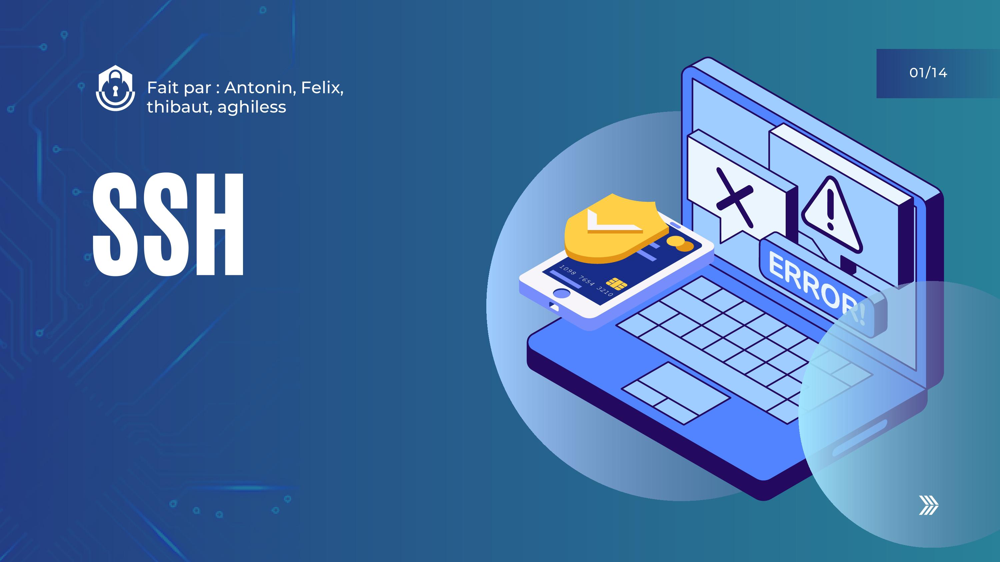
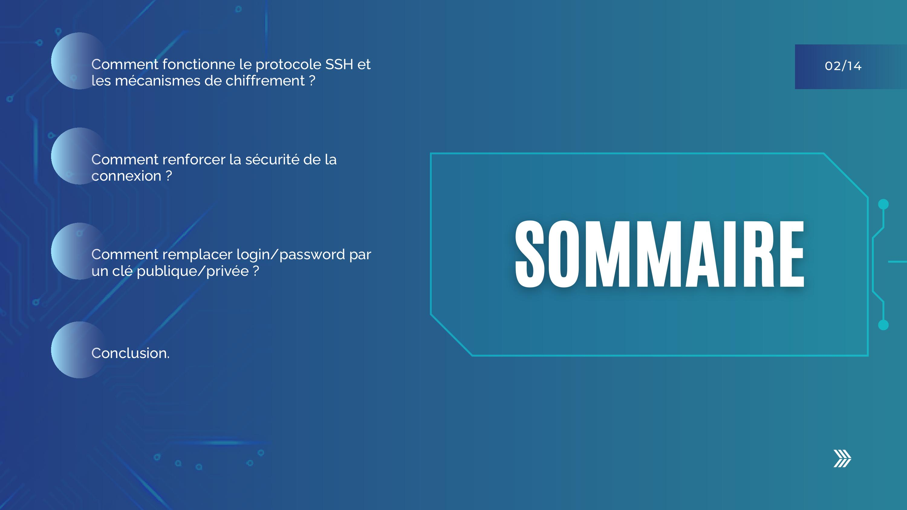
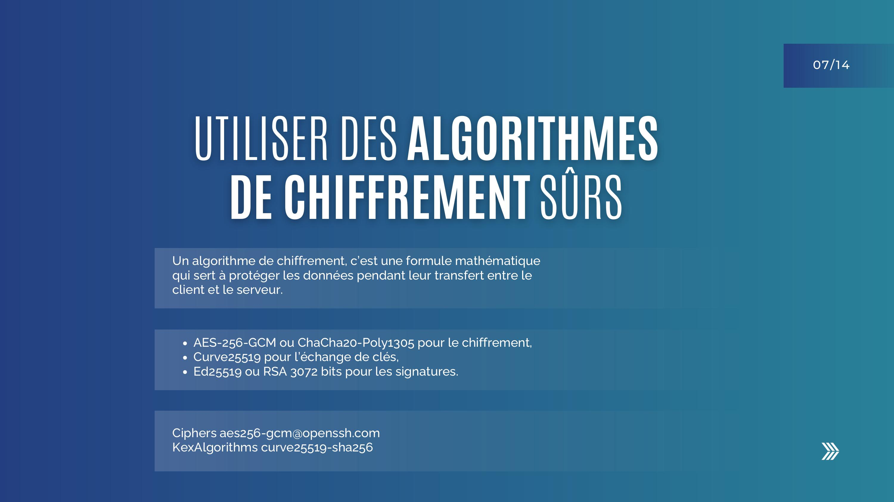

L'objectif de cette SAÉ était de nous sensibiliser à la cybersécurité et aux bonnes pratiques informatiques. On avait deux choses à faire : suivre le MOOC de l'ANSSI (SecNumacadémie) en individuel, et réaliser un travail de groupe sur un thème lié à la sécurité. Notre groupe a travaillé sur le protocole SSH et les attaques par force brute. On devait produire un diaporama et le présenter à l'oral. On a aussi fait un TP où l'on a testé des attaques brute force sur des machines virtuelles.



Slides 1, 2 et 7 du diaporama — couverture, sommaire et algorithmes de chiffrement recommandés.
| Difficulté rencontrée | Ce que je ferais si c'était à refaire |
|---|---|
| MOOC non terminé : trop de contenu, pas assez de temps, difficultés de compréhension. | Me fixer un planning avec quelques modules par semaine au lieu de tout faire d'un coup, et tenir des fiches résumées par thème. |
| Difficulté à comprendre Hydra et le fonctionnement d'une attaque brute force. | Lire la documentation de l'outil avant le TP pour arriver préparé, au lieu de tout découvrir pendant les manips. |
Cette SAÉ m'a fait prendre conscience des dangers liés aux réseaux et à Internet. Avant, je ne mesurais pas l'importance de sécuriser un accès SSH ou de bien gérer ses mots de passe. Le TP brute force m'a marqué : voir un mot de passe se faire craquer en quelques secondes rend les choses très concrètes. Même sans avoir terminé le MOOC, cette SAÉ a renforcé mon envie de m'orienter vers la cybersécurité. Je me positionne à un niveau en cours d'acquisition : les bases sont là, mais je dois encore approfondir les protocoles de chiffrement.